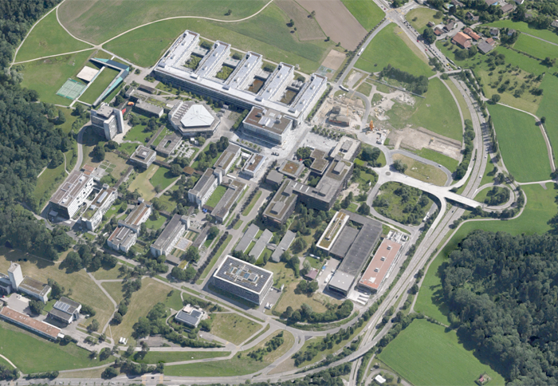

01.07.2015 ETH ZURICH, D-ARCH
From september 2015: Nathanaël Chollet works as teaching assistant by Professor Markus Peter at the Swiss Federal Institute of Technology of Zürich.
From september 2015: Nathanaël Chollet works as teaching assistant by Professor Markus Peter at the Swiss Federal Institute of Technology of Zürich.